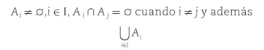

Para definir una relación de equivalencia,
primero se debe establecer el concepto de partición de un conjunto, debido a que una partición
puede generar dicha relación.
Partición de un Conjunto
Definición .-
Una partición S de un conjunto A es una
colección de subconjuntos disconjuntos no vacíos de A que tienen a A
como unión; en otras palabras, la colección de subconjuntos Ai, i ∈ I (donde I
es el conjunto de índices) forma una partición S del conjunto A si y solo si:

Entonces, S={A1, A2,....,Ak} es una partición de A; por tanto:
A= A1 ∪ A2 ∪..... ∪ Ak
Los subconjuntos Ai reciben el nombre de bloque de la partición.
Ejemplo 2.7.1:
Sea el conjunto A= {xt ⋅ q ⋅ x son letras del alfabeto} y sean los siguientes
subconjuntos de A:
A1 = {a,e,i,o,u},
A2 = {w,c},
A3 = {b,f,g,h,j,k,l},
A4 = {m,n,ñ,p,q},
A5 = {r,s,t,v},
A6 = {x,y} y
A7 = {d,z}
Entonces:
S = {{a,e,i,o,u},{w,c},{b,f,g,h,j,k,l},{m,n,ñ,p,q},{r,s,t,v},{d,z}}
O también
S={A1,A2,A3A4A5A6A7}
En una partición de A, ya que todos los conjuntos Ai son no vacios. Adémas, caulesquiera
dos subconjuntos
distintos son disjuntos. Por último, la unión de todos los subconjuntos da como resultado el
conjunto A.
Por tanto:
A = A1,A2,A3A4A5A6A7